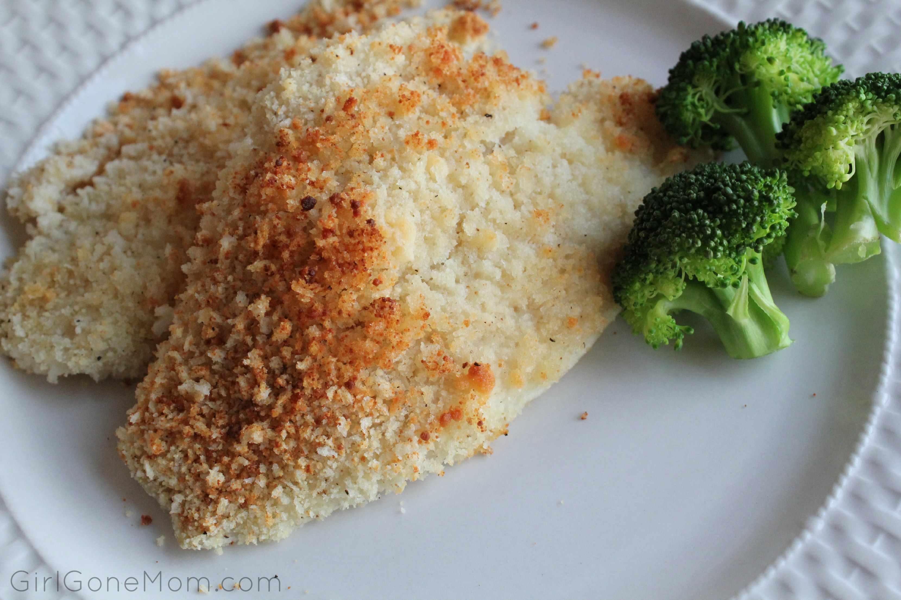

Baked Flounder with Parmesan Crumbs

By adding freshly grated parmesan to the breadcrumbs, you can create a tasty
and buttery topping for this flaky white fish. Cooks in just fifteen minutes!
Ingredients:
- 4 flounder fillets (2lbs total)
- Salt and freshly ground pepper
- 3/4 cup freshly grated parmesan cheese
- 1/2 cup coarse fresh bread crumbs
- 4 tablespoons unsalted butter (melted)
- 2 tablespoons extra-virgin olive oil
Steps:
- Preheat the oven to 425F
- In a large baking dish, season the fish fillets with salt and pepper
- Mix the the parmesan with the breadcrumbs, melted butter, and olive oil
and sprinkle over the fillets.
- Bake for fifteen minutes, or until the fish is cooked and the topping is golden
- Let stand for five minutes before cooking
Home